Виртуальная
трудовая
школа
Крестьянство SDK
обновление версии: 13.07.2013ЦЕЛЬ
Новая операционная система
Новый интернет
Новая система безопасности
Новый интерфейс
Новая иделолгия: открытые технологии
СТАРАЯ ОПЕРАЦИОННАЯ СИСТЕМА
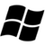

 ...
...
- не мобильная: требует инсталляции
- не безопасная: приложения не изолированы друг от друга в памяти
- не динамичная: исходный код откомпилирован и не готов к само-модификации и порождению
- не интегрированные среды: режим разработчика и пользователя разделены
- не сервис-ориентированная: приложения не содержат открытых интерфейсов для работы в сети
- вне контекста: одинакова для всех пользователей
НОВАЯ ОПЕРАЦИОННАЯ СИСТЕМА
- мобильная: не требует инсталляции или запускается нпрямую в инетрнет браузере (язык Smalltalk, JavaScript)
- безопасная: взаимодействие приложений на основе урвня видимости и проверки объектов" на свой-чужой" (язык E)
- динамичная: исходный код открыт и доступен для само-модификации в реальном времени (виртуальная машина Smalltalk)
- интегрированная среда: "хакер", разработчик, пользователь работают одновременно
- сервис-ориентированная: приложения как сетевые сервисы
- контекстно-зависимая: пользователь представлен "аватаром"
СТАРЫЙ ИНТЕРНЕТ
- однопользовательский: отсутсвует понятие "виртуального времени"
- не масштабируемый: клиент-серверная архитектура
- не безопасный: действует на функциях передачи данных
НОВЫЙ ИНТЕРНЕТ
- многопользовательский: все сетевые операции подчинены единому "виртуальному времени"
- масштабируемый: распределенные вычисления в едином виртуальном пространстве
- безопасный: действует на функциях передачи вычислений. данные не передаются
СТАРЫЙ ИНТЕРФЕЙС
ПАЛЕЦ и МЫШЬ
ПАЛЬЦЫ и СЕНСОР
ТЕЛО и СЕНСОР
ГЛАЗА и МОНИТОР
НОВЫЙ ИНТЕРФЕЙС
ПАЛЕЦ и МЫШЬ и ПАЛЕЦ АВТАВРА
ПАЛЬЦЫ и СЕНСОР и ПАЛЬЦЫ АВАТАРА
ТЕЛО и СЕНСОР и ТЕЛО АВАТАРА
ГЛАЗА и МОНИТОР и ГЛАЗА АВАТАРА
СТАРАЯ ИДЕОЛОГИЯ: ПАТЕНТЫ и ЗАКРЫТЫЕ ТЕХНОЛОГИИ
НЕ РАЗВИВЮЩИЕСЯ
НЕ РАЗВИВАЮЩИЕ
ВРАГ ВНУТРИ СЕБЯ
ИСКУССТВЕННАЯ ЗАЩИТА
НОВАЯ ИДЕОЛОГИЯ: ОТКРЫТЫЕ ТЕХНОЛОГИИ
ВЕЗДЕСУЩИЕ
ОБЩЕСТВЕННЫЕ
ОБРАЗОВАТЕЛЬНЫЕ
ЕСТЕСТВЕННАЯ ЗАЩИТА
ТЕХНОЛОГИИ
- ЯЗЫК и ВИРТУАЛЬНАЯ МАШИНА Smalltalk: родитель объектно-ориентированного программирования, графического интерфейса, языка JavaScript; используется в промышленном производстве для программирования сложных симуляционных сред
- СЕТЕВАЯ АРХИТЕКТУРА OpenQwaq/OpenCroquet: распределенные вычисления в одноранговой сети, моделирование "виртуального времени"; создан одним из основателей протокола интернет TCP/IP и UDP
- ПЛАТФОРМА:виртуальный мир, пользователь представлен "аватаром"; программный код платформы доступен для модификации самой программе и программистам в режиме реального времени
- ИНТЕРФЕЙС: система автоматической виртуальной реальности (CAVE), сенсоры распознавания движения (Microsoft Kinect)
- FFI: доступ к любым функциям существующих операционных систем
ПРОЕКТ РФФИ
Визуализации искривленных пространств в реальном времени для OpenGL (автор Jeff Weeks), реализованный на языке Smalltalk в рамках проекта, поддержанного РФФИ (№ 07-07-00332-а) «Виртуальное обучающее пространство - Крестьянство» (2007-2008).
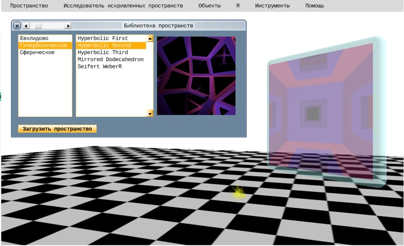АНАЛОГИ
Immersive Terf 3DICC(США)
Open Cobalt EDU(США)
Virtual World Framework DoD(США)
Lively Kernel HPI(Германия)
СРАВНЕНИЕ С АНАЛОГАМИ
- Immersive Terf: требует установки на сервер и сильно зависит от сторонних приложений; нет математической библиотеки работы с искривлеными пространствами на низком уровне; нет функций поддержки новых интерфейсов (CAVE)
- Open Cobalt: базируется на предыдущей версии сетевой архитектуры Open Croquet; нет математической библиотеки работы с искривлеными пространствами на низком уровне
- Virtual World Framework: упрощенная версия сетевой архитектуры Open Croquet на JavaScript/Ruby для запуска внутри интернет-браузера; может являтся дополнением к Крестьянство SDK
- Lively Kernel: без сетевой архитектуры Open Croquet
IEEE публикация
На фотографии Алан Кай, основатель объектно-ориентированного программирования 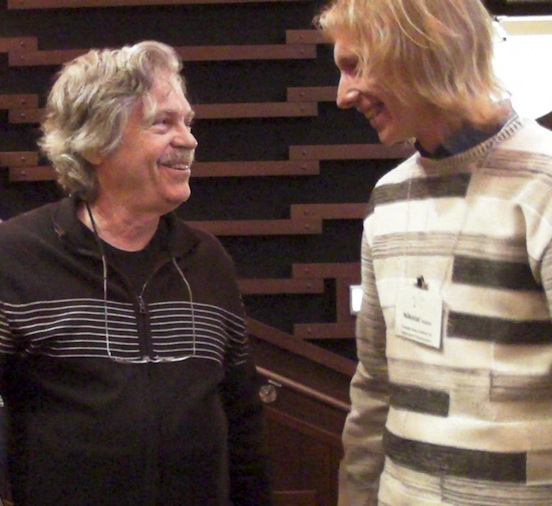 Доклад и публикация: "Крестьянство SDK для создания мобильных, виртуальных, обучающих пространств 3D" на десятой международной конференции по созданию, соединению и взаимодействию с помощью компьютеров С5, 2012, Институт креативных технологий, Университет Северной Калифорнии, США Программа конференции [Скачать публикацию] © IEEE, 2012. Personal use of this material is permitted. However, permission to reprint/republish this material for advertising or promotional purposes or for creating new collective works for resale or redistribution to servers or lists or to reuse any copyrighted component of this work in other works must be obtained from the IEEE.
Проекты
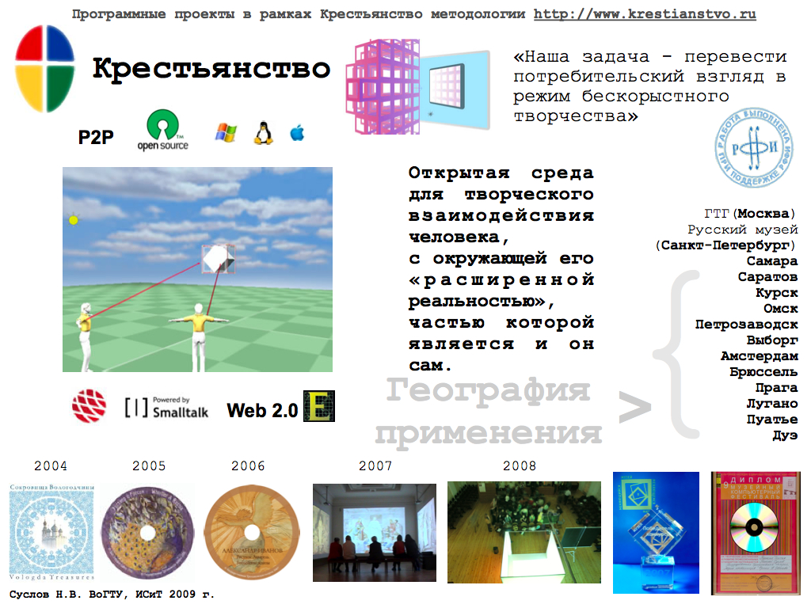Виртуальное обучающее пространство
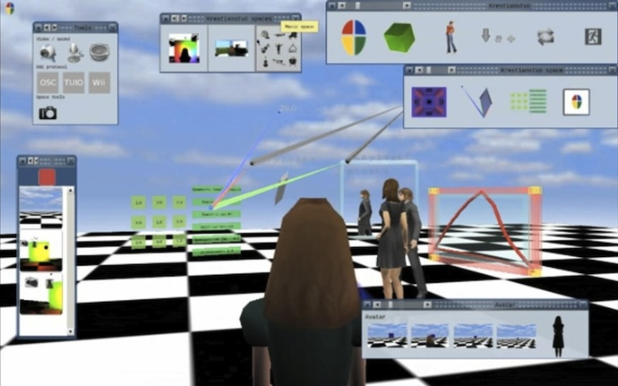 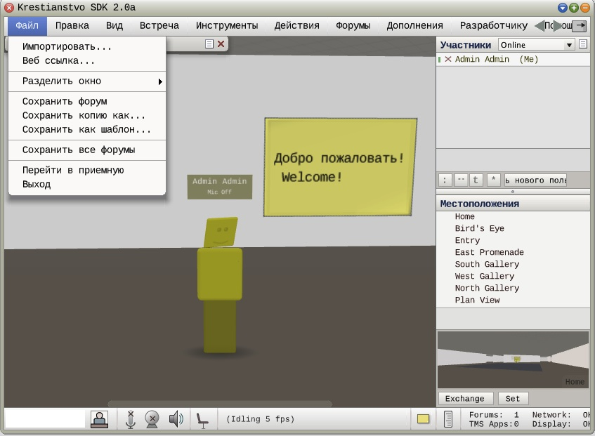 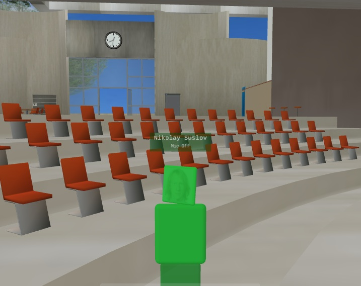 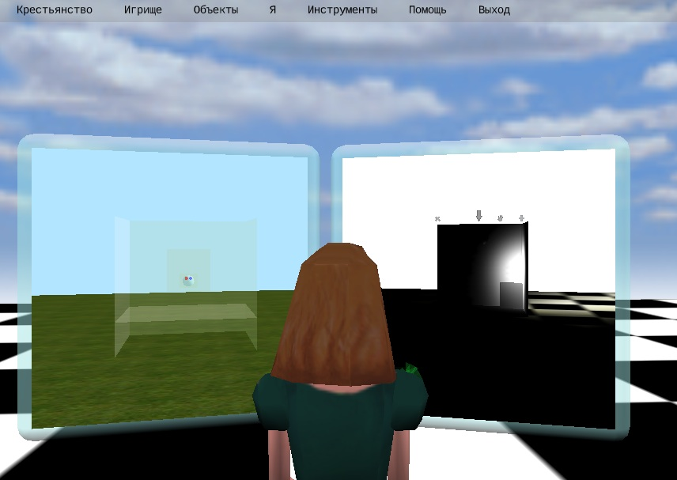Виртуальный музей геометрий 3D
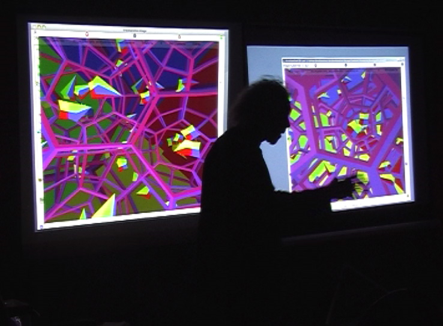 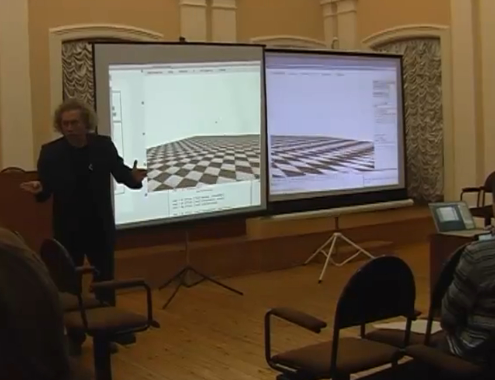 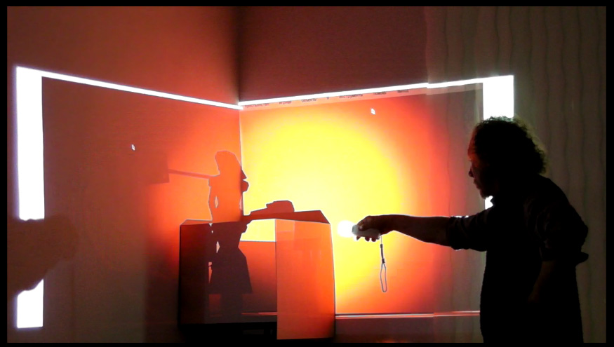
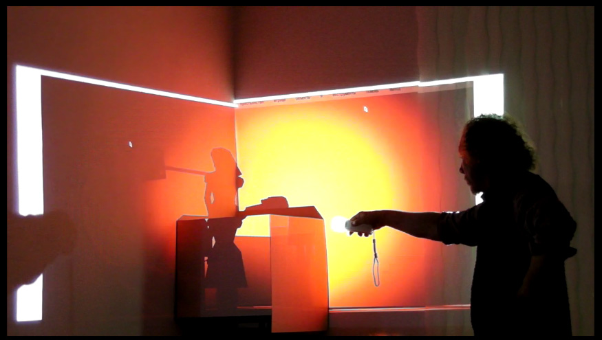
Куб виртуальной реальности
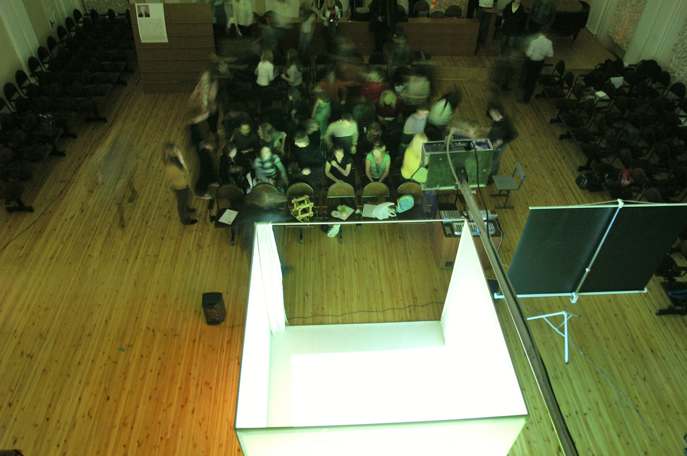 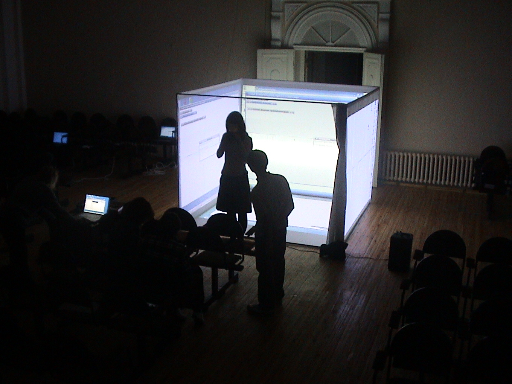 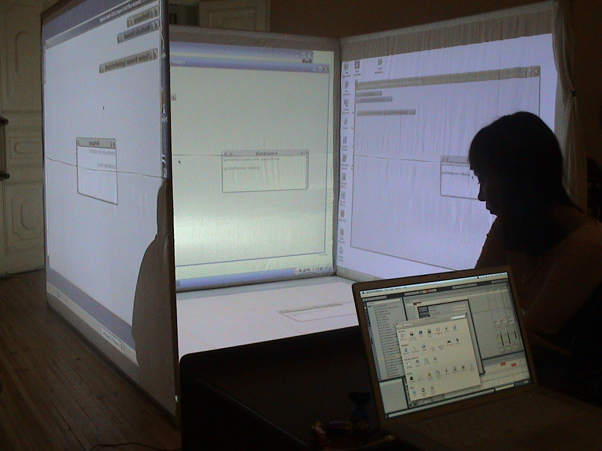 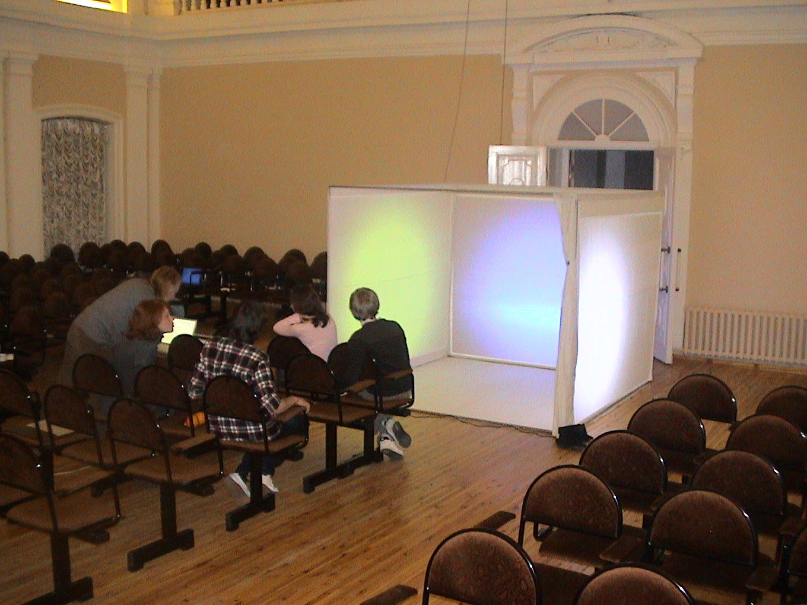Система автоматической виртуальной реальности
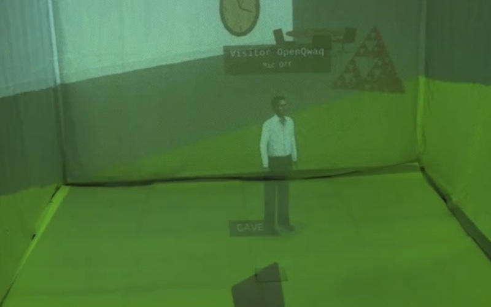Сенсоры Kinect и TUIO
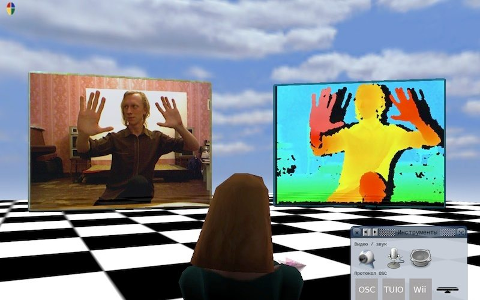 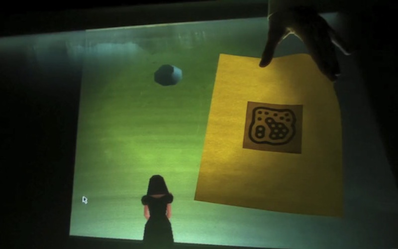Мультимедиа образовательные диски
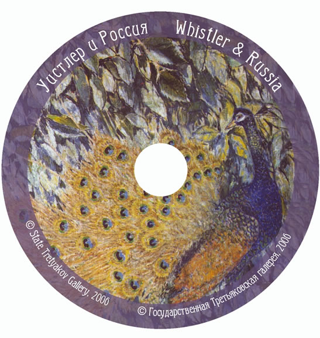


социальная значимость
"Виртуальныя трудовая школа" - это комплекс открытого программного обеспечения для компьютера, позволяющий любому человеку, вне зависимости от статуса, положения, материального состояния, но занимающегося общественно-значимой деятельностью (трудом), быть вооруженным современными, адекватными и нужными информационными технологиям. Программное обеспечение, основным принципом разработки которого, является соответствие современному уровню развития компьютерной инженерии, математики, физики, приоритетным направлениям фундаментальной науки и искусства, но не маркетинговым исследованиям и бизнес-логике.
СЕТЬ
Используя существующие общедоступные транспортные каналы связи, программа позволяет организовать на них в неограниченном количестве общественные, гетерогенные, защищенные, одноранговые сети типа точка-точка (p2p, торент) на основе распределенных вычислений, самостоятельно без помощи системных администраторов и программистовМИР
Адекватные, конформные по форме и содержанию методы взаимодействия человека с информационными технологиями с использованием средств виртуальной, дополненной реальности, средств навигации и робототехникиПРОРЫВНАЯ ТЕХНОЛОГИЯ
Комплекс открытого программного обеспечения Крестьянство SDK представляет собой приложение, написанное на языке программирования SmallTalk для 3-х мерной операционной системы Open Qwaq/Open Croquet, запускается посредством виртуальной машины. Несколько запущенных приложений образуют сеть аналогичную торрент (p2p) и обеспечивают распределенные вычисления в едином пространстве на основе репликацииДОСТУПНОСТЬ
На сервере http://www.krestianstvo.org создан пример постоянно-действующего сервиса виртуальных миров, позволяющий организовать совместную работу через сеть интернет. Программирование осуществляется как на английском так и на русском языках, в пределе с полным отказом от английского.ТВОРЧЕСТВО
Программный комплекс позволяет создавать чуть ли не школьнику мобильные системы автоматической виртуальной реальности CAVE (Cave Automatic Virtual Environment), а так же системы дополненной реальности. Количество создаваемых секторов CAVE, участвующих в проекции не ограничено. (стоимость подобных коммерческих CAVE варьируется от 50 000$ до 1 000000$ , например EON iCube)правовая защита

Все разрабатываемые технологии удовлетворяют открытым лицензиям OPEN SOURCE
СТАДИЯ ПРОЕКТА
- Программный комплекс находится в стадии тестирования и отладки
- На сегодня прототип проекта уже существует и функционирует. Разработка по проекту следует модели проектирования, известной под именем "вечная бета", что означает: что с момента запуска прототипа каждый желающий может его тестировать, опробовать в действии, изменять и совершенствовать под свои задачи
- Для развития проекта потребуется обучение дополнительных людей программистов, художников работющих с мультимедиа содержанием
- Создание лаборатории разработки открытого программного обеспечения для виртуальной трудовой школы
Организация работ
- Организация неигрового виртуального обучающего пространства для проведения совместной научно-исследовательской работы отдельными учеными или целыми коллективами
- Запуск виртуальной трудовой школы в сети интернет
- Заключение договоров на проведение совместных экспериментов с предприятиями и учебными организациями профессионально-образовательной направленности
- Участие виртуальных трудовых школ в реальной социально-значимой производственной деятельности
об авторе

Суслов Николай Викторович
e-mail: SuslovNV@krestianstvo.org
тел: +7 960 293 06 43 Работа над программным обеспечением "Крестьянство" SDK активно ведется автором c 2004 г. В 2005 г. автор выступил с докладом о программе на международной конференции в Бельгии и был приглашен в интернатуру в Германию для участия в проекте по созданию электронных книг нового поколения. В 2007 г. проект "Виртуальное обучающее пространство Крестьянство SDK" был поддержан Российским фондом фундаментальных исследований (РФФИ) и получил финансирование в размере 400 тыс. руб. на два года, руководителем которого был автор. В 2009-2010 гг. проект неоднократно получал финансирование из региональных фондов Вологодской области. На основе "Крестьянство" SDK были выпущены автором два мультимедийных образовательных диска в Государственной Третьяковской галерее и создана интерактивная инсталляция, которая стала победителем грантового конкурса благотворительного фонда В. Потанина "Меняющийся музей в меняющемся мире" и была представлена в Москве (ГТГ), Санкт-Петербурге (Государственный Русский музей) и в десятке других городов России.
продолжение на следующей странице ниже..
об авторе
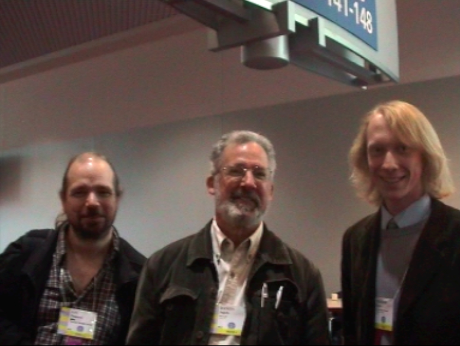На фотографии Даниел Ингалс, создатель виртуальной машины для языков объектно-ориентированного программирования и Иан Пиумарта создатель операционной системы размером в 20 Kb В 2008 г. созданное программное обеспечение опробовалось автором в области робототехники в научно-исследовательской лаборатории во Франции. В 2012 г. Крестьянство SDK была представлена автором на десятой международной конференции по созданию, соединению и взаимодействию с помощью компьютеров С5, 2012, Институт креативных технологий, Университет Северной Калифорнии, США, с публикаций в журнале под редакцией IEEE (международный институт разработки стандартов). Конференцию возглавлял Алан Кай, основатель объектно-ориентированного программирования и графического интерфейса для компьютера.